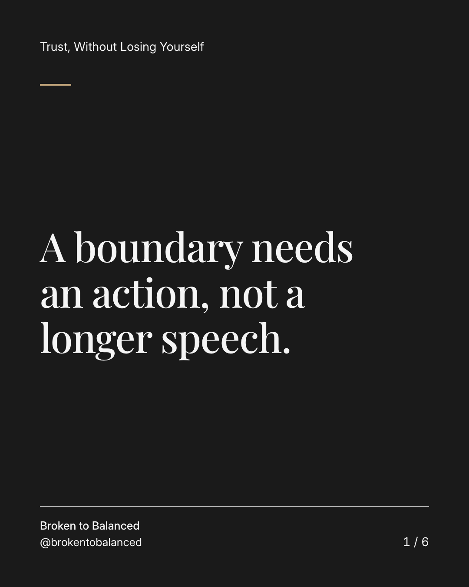
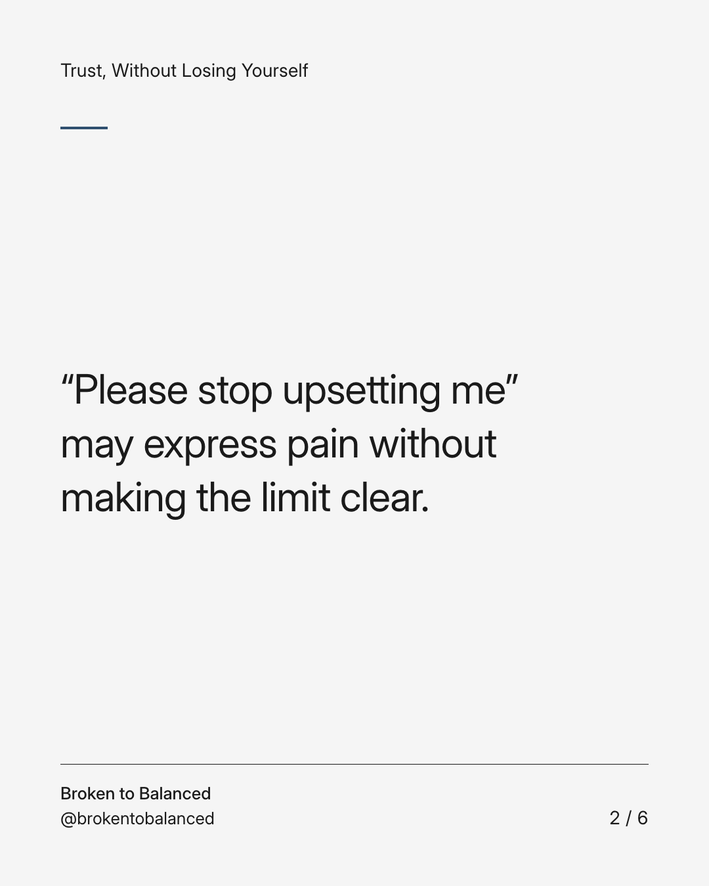
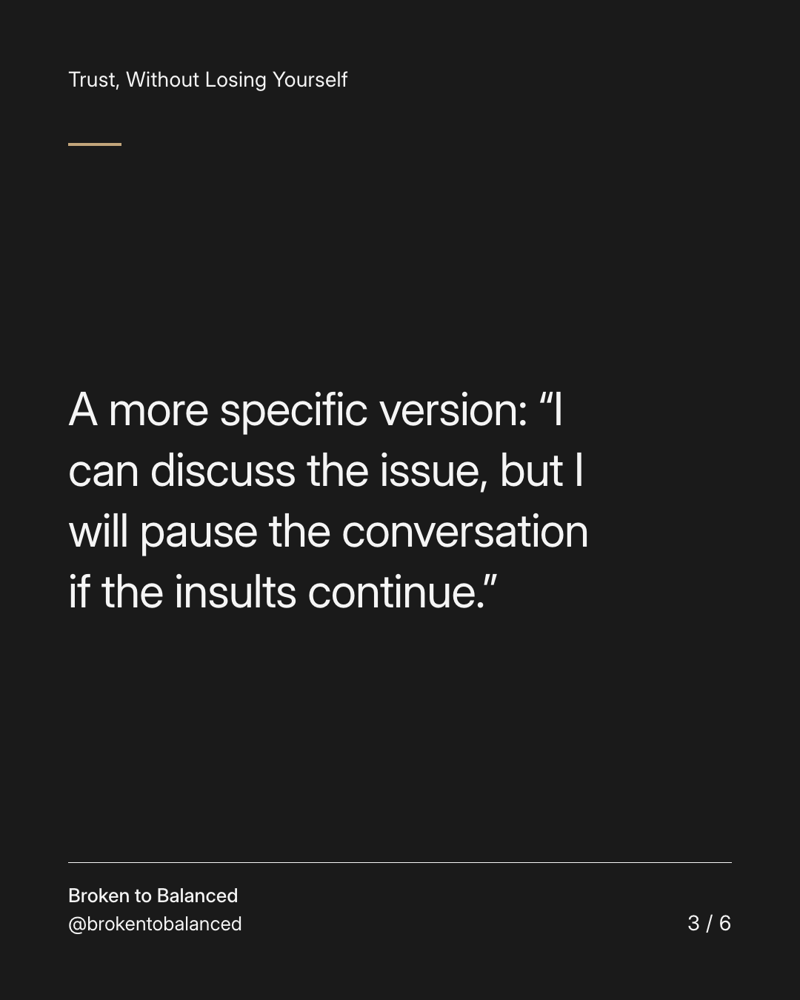
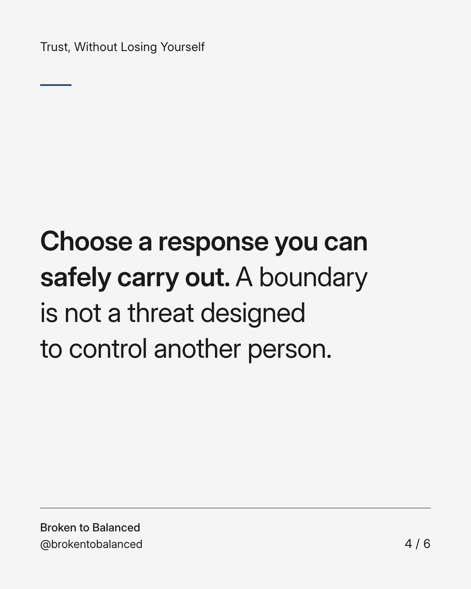
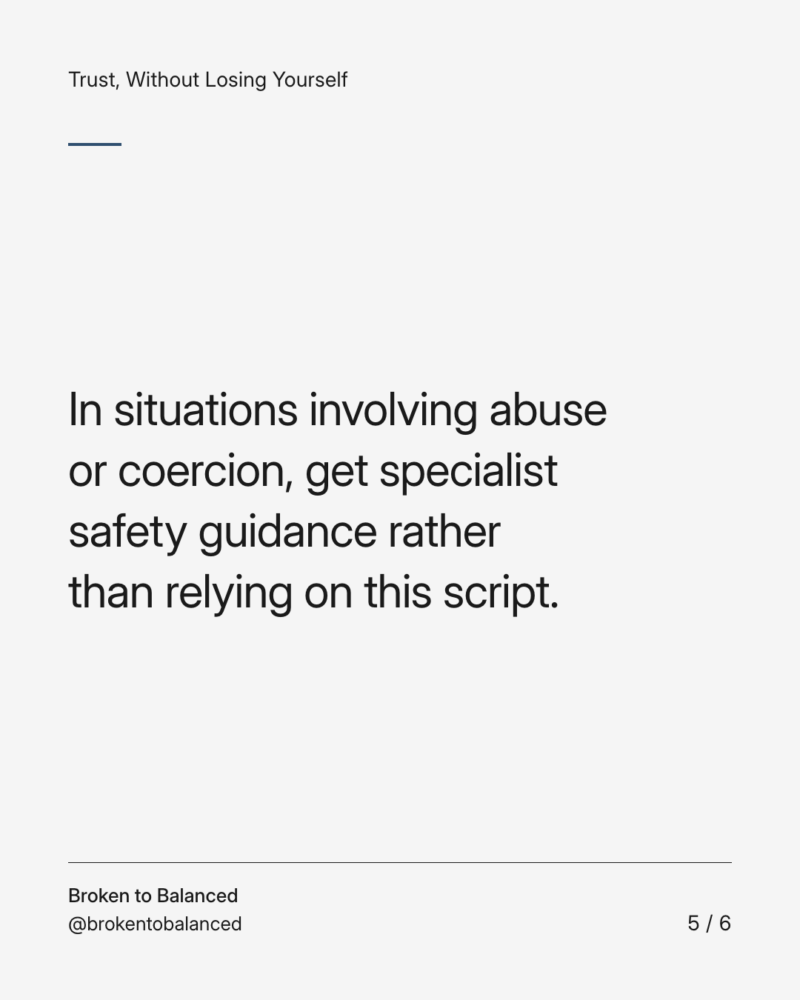
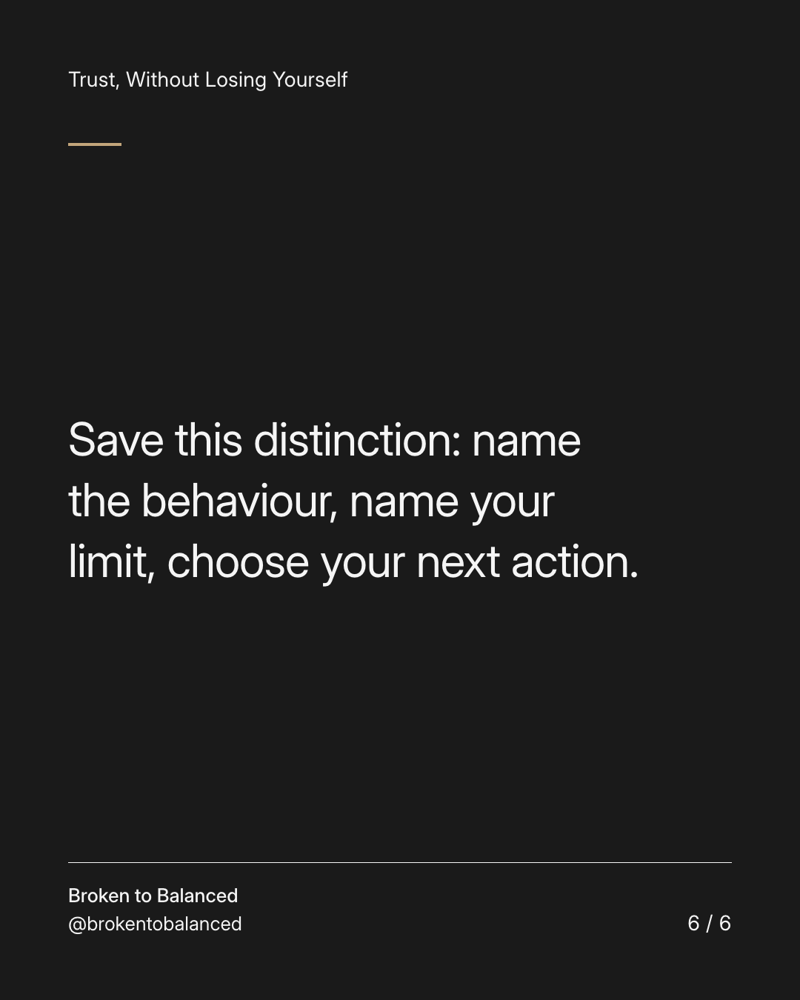

Exact text and accessibility text
A boundary needs an action, not a longer speech.
Slide 1 of 6. A boundary needs an action, not a longer speech.


Exact text and accessibility text
“Please stop upsetting me” may express pain without making the limit clear.
Slide 2 of 6. “Please stop upsetting me” may express pain without making the limit clear.


Exact text and accessibility text
A more specific version: “I can discuss the issue, but I will pause the conversation if the insults continue.”
Slide 3 of 6. A more specific version: “I can discuss the issue, but I will pause the conversation if the insults continue.”


Exact text and accessibility text
Choose a response you can safely carry out. A boundary is not a threat designed to control another person.
Slide 4 of 6. Choose a response you can safely carry out. A boundary is not a threat designed to control another person.


Exact text and accessibility text
In situations involving abuse or coercion, get specialist safety guidance rather than relying on this script.
Slide 5 of 6. In situations involving abuse or coercion, get specialist safety guidance rather than relying on this script.


Exact text and accessibility text
Save this distinction: name the behaviour, name your limit, choose your next action.
Slide 6 of 6. Save this distinction: name the behaviour, name your limit, choose your next action.
Exact caption
Plain-text fallback: select and copy the caption.